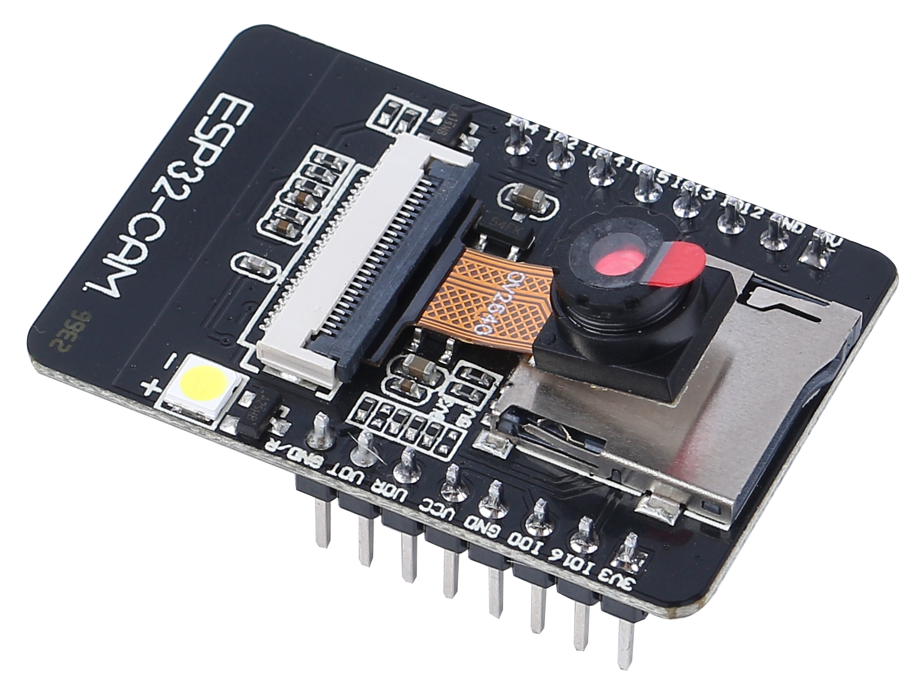

Note
こんにちは、SunFounderのRaspberry Pi & Arduino & ESP32愛好家コミュニティへようこそ！Facebook上でRaspberry Pi、Arduino、ESP32についてもっと深く掘り下げ、他の愛好家と交流しましょう。
参加する理由は？
エキスパートサポート：コミュニティやチームの助けを借りて、販売後の問題や技術的な課題を解決します。
学び＆共有：ヒントやチュートリアルを交換してスキルを向上させましょう。
独占的なプレビュー：新製品の発表や先行プレビューに早期アクセスしましょう。
特別割引：最新製品の独占割引をお楽しみください。
祭りのプロモーションとギフト：ギフトや祝日のプロモーションに参加しましょう。
👉 私たちと一緒に探索し、創造する準備はできていますか？[ここ]をクリックして今すぐ参加しましょう！
ESP32 CAM
{kind=link}
ESP32-CAMは、ESP32-Sチップを搭載した非常に小さなカメラモジュールで、価格はおおよそ$10です。OV2640カメラと多数のGPIOを持つほか、カメラで撮影した画像やクライアントに提供するファイルを保存するためのmicroSDカードスロットも備えています。
このモジュールは、最小のシステムとして独立して動作することができ、サイズはわずか27*40.5*4.5mmで、ディープスリープ時の消費電流は6mA以下です。
ESP32-CAMは、さまざまなIoTアプリケーションで広く使用でき、家庭用スマートデバイス、産業用無線制御、無線監視、QR無線識別、無線位置情報システム信号などのIoTアプリケーションに適しています。IoTアプリケーションの理想的なソリューションです。
技術仕様
モジュールモデル |
ESP32-CAM |
パッケージ |
DIP-16 |
サイズ |
27*40.5*4.5（±0.2）mm |
SPIフラッシュ |
デフォルト 32Mbit |
RAM |
内部520KB + 外部8MB PSRAM |
ブルートゥース |
Bluetooth 4.2 BR/EDRおよびBLE基準 |
Wi-Fi |
802.11 b/g/n/e/i |
サポートインターフェース |
UART、SPI、I2C、PWM |
サポートTFカード |
最大4G |
IOピン |
9 |
シリアルポート速度 |
デフォルト 115200 bps |
画像出力フォーマット |
JPEG（OV2640のみサポート）、BMP、グレースケール |
周波数範囲 |
2400 ~2483.5MHz |
アンテナタイプ |
オンボードPCBアンテナ、ゲイン 2dBi |
送信電力 |
802.11b: 17±2 dBm (@11Mbps) |
802.11g: 14±2 dBm (@54Mbps) |
|
802.11n: 13±2 dBm (@MCS7) |
|
受信感度 |
CCK, 1 Mbps: -90dBm, |
CCK, 11 Mbps: -85 dBm |
|
6 Mbps (1/2 BPSK): -88 dBm |
|
54 Mbps (3/4 64-QAM): -70dBm |
|
MCS7 (65 Mbps, 72.2 Mbps): -67dBm |
|
消費電力 |
フラッシュオフ: 180mA@5V, |
フラッシュオンおよび最大輝度: 310mA@5V |
|
ディープスリープ: 最低消費電力 6mA@5V |
|
モデレートスリープ: 最低 20mA@5V |
|
ライトスリープ: 最低 6.7mA@5V |
|
セキュリティ |
WPA/WPA2/WPA2-Enterprise/WPS |
電源範囲 |
4.75-5.25V |
動作温度 |
-20 ℃ ~ 70 ℃ |
保存環境 |
-40 ℃ ~ 125 ℃ , < 90%RH |
ESP32-CAM ピン配置
以下の図は、ESP32-CAMのピン配置（AI-Thinkerモジュール）を示しています。

GND ピンは3つあり、電源のピンも3つあります：3.3V、5V、3.3Vまたは5V。
GPIO 1 と GPIO 3 はシリアルピンです。これらのピンはボードにコードをアップロードするために必要です。
さらに、 GPIO 0 も重要な役割を果たしており、ESP32がフラッシングモードかどうかを判断します。 GPIO 0 を GND に接続すると、ESP32はフラッシングモードになります。
以下のピンは、microSDカードリーダーに内部接続されています：
GPIO 14: CLK
GPIO 15: CMD
GPIO 2: データ0
GPIO 4: データ1（オンボードLEDにも接続）
GPIO 12: データ2
GPIO 13: データ3
注意
モジュールの入力電源が少なくとも5V 2Aであることを確認してください。そうでない場合、画像にウォーターラインが出現する可能性があります。
ESP32のGPIO32ピンはカメラの電源を制御します。カメラが動作しているときは、GPIO32を低くしてください。
GPIO0はカメラのXCLKに接続されているため、使用する際にGPIO0を空中にして、高または低レベルに接続しないでください。
工場出荷時には既にデフォルトのファームウェアが含まれており、追加のダウンロードは提供されません。他のファームウェアを再書き込む必要がある場合は注意してください。
文書
カメラ仕様（英語版）： ov2640_ds_1.8
Note
すべての情報は Ai-Thinker からのものです。